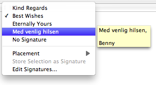

By default, only the To header and the Subject header is shown in the composer. You can add more headers and control which should be shown by default via the popup menu in the left side of the Composer status bar.
See preferences.
If you have more than 1 email address configured in your IMAP accounts (in total) then a popup menu is available for selecting the From address to be used. Note that the default From address is derived by MailMate based on either the message replied or the primary recipient for a new message. For new messages, the address is automatically updated when changing the To header except if an explicit choice has been made.
The menu also includues a “Customize…” menu item which allows you to alter the currently selected identity. The text field shown supports completion based on the From header of all previously sent messages.
Many email clients allow you to configure a selection of signatures and this is also true for MailMate. This is especially useful if a signature is automatically inserted when you compose a new message, but this requires the email client to be able to guess which signature you need. Some email clients solve this problem by letting the user explicitly choose a signature to be used for each email account, but MailMate takes a different approach to this problem.
In MailMate, the choice of default signature is based on the main recipient of the email rather than the account/identity used. MailMate looks for the most recent email to the same recipient and reuses the choice of signature. The same is done for the choice of top or bottom posting. Changing these choices will then affect any future emails to the same recipient since the email will become the new most recent email. If no previous email exists (with a choice of signature) to the recipient then MailMate falls back to choosing the most often used signature sent using the same identity.
After using this system for a while, you’ll be able to have your preferred signature and signature placement chosen by default for most of your emails.
Note that MailMate does handle the following caveat: If you change one of your existing signatures, for example by updating a phone number, then this will work as expected even when the signature is used in a new email where previous emails to the same recipient uses a signature with the old phone number.
Also note that hidden preferences include a setting to make MailMate see new messages and replies as two different types of messages when deriving a signature from previously sent messages.
Attachments can be added either by dragging them onto the composer or by using the “Attach Files…” (⇧⌘A) menu item. Using the attachments menu in the Composer status bar you can also view existing attachments or remove them.
Inline attachments/images are not supported.